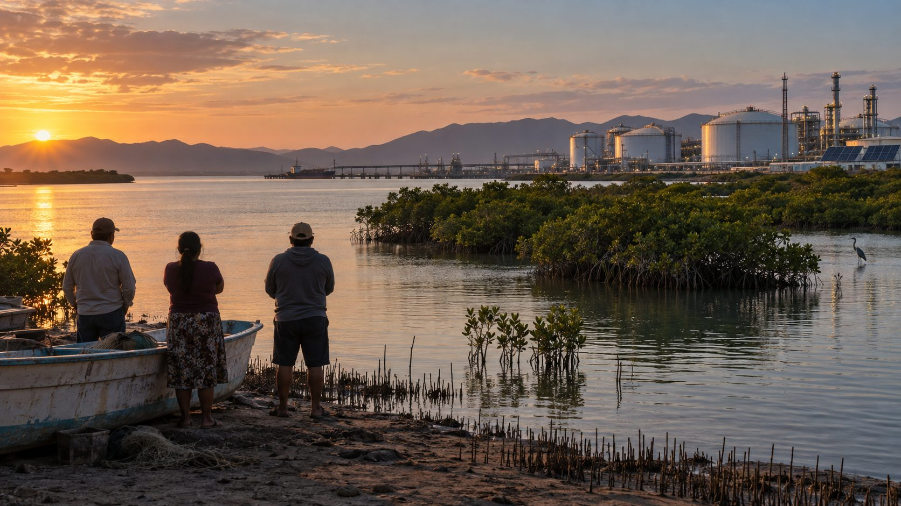

Imagen: generada con Inteligencia Artificial
La transición ecológica no es solo un cambio tecnológico; es, sobre todo, una disputa por el poder.
Cuando hablamos de paneles solares o de energías limpias, pocas veces nos preguntamos quién decide dónde se construyen esos proyectos, quién asume sus costos ambientales y quién obtiene sus beneficios.
Ahí entra la gobernanza climática: la forma en que Estados, empresas, comunidades e instituciones toman decisiones sobre el territorio, los recursos y el desarrollo en un contexto de crisis ambiental. Esa conversación ya no puede posponerse.
La reciente decisión del gobierno mexicano de respaldar la planta de amoníaco en Topolobampo, un proyecto ligado a la reconfiguración energética y territorial de la zona, pese a la oposición de comunidades mayo-yoreme que desde hace más de una década denuncian riesgos para la bahía de Ohuira, vuelve a poner esta pregunta en el centro del debate: ¿quién define el interés público y quién tiene legitimidad para decidir qué sacrificios ambientales son aceptables?
Así, Topolobampo enseña que la transición ecológica no se limita a cambiar tecnologías, sino que también implica definir qué industrias se promueven, en qué territorios y bajo qué criterios ambientales. La planta de amoníaco entra en este debate porque muestra cómo la promesa de desarrollo verde puede entrar en tensión con el uso del suelo y del agua, así como con los derechos de las comunidades.
La competencia por los minerales críticos, los conflictos por el agua, la expansión de proyectos en ecosistemas frágiles y el interés de potencias extranjeras por ciertos recursos muestran que la crisis climática también reordena las relaciones de poder. La transición ecológica no elimina los conflictos, sino que los desplaza. Cambia el terreno de la disputa, pero no la pregunta de fondo: quién decide, quién queda fuera y quién carga con las consecuencias.
Desde la perspectiva de la paz positiva, el problema no es que existan conflictos en torno a los proyectos de infraestructura; toda transformación los genera. El problema aparece cuando las instituciones no logran procesarlos con legitimidad y transparencia, sin reproducir desigualdades ni excluir a los actores directamente afectados.
Por eso, la gobernanza climática será uno de los grandes desafíos de las próximas décadas, no solo porque el cambio climático intensifica las tensiones sociales, sino porque obligará a los Estados a decidir cómo quieren gobernar los territorios y los recursos. La pregunta que deja Topolobampo trasciende a Sinaloa: ¿podrá México conducir la transición ecológica fortaleciendo sus instituciones democráticas o terminará profundizando las desigualdades que busca resolver?
CIPMEX · Centro de Investigación para la Paz México, A.C. · Paz que se piensa, paz que se construye